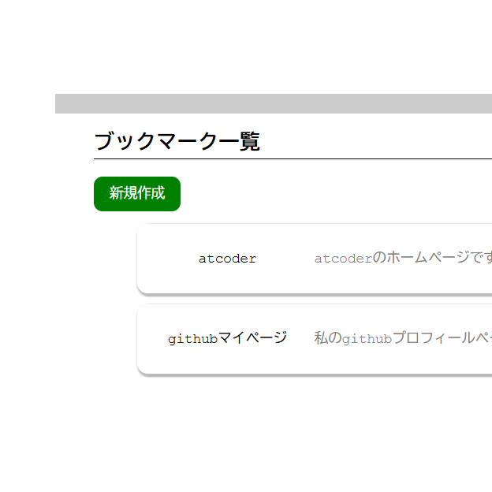
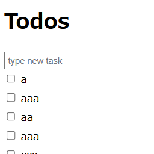
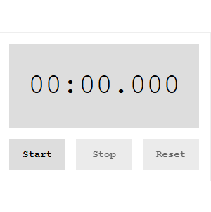
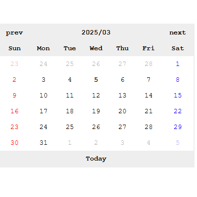
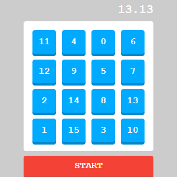
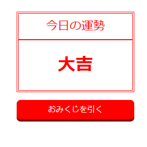
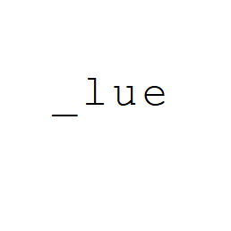

制作物
-

ブックマーク管理アプリ
phpとmySQLを用いてのブックマーク管理アプリを作りました。ログイン認証とブックマークの追加、編集、削除、キーワード検索に加え、ブックマークにタグを付与し、タグでの絞り込みもできるようにしました。railwayによりデプロイもしています ぜひ使ってみてください！
-

Todo管理アプリ
phpとmySQLを用いてのTodo管理アプリです。CRUD機能の基本的な練習として作成しました。Laravelを学習後コードを書き換えてより読みやすい作りにする予定です。
-

ストップウォッチ
簡易的なストップウォッチです。setTimeout関数を用いてスタートからの経過時間を10ミリ秒ごとに表示しています。
-

カレンダー
今日の日付は太字、土日は色をつけて表示されるカレンダーです。前月の最後や翌月の最初の日は薄くしているのですが、表示する方法の実装が難しかったです。
-

数字クリックゲーム
0から順番に数字を選んでいくゲームです。一つ一つの数字や、数字を表示するボード、さらにゲームそのものをクラスにまとめています。オブジェクト指向のカプセル化のちょっとした練習になりました。
-

おみくじ
クリックしたら大吉、小吉等が表示されるだけのものです。ランダム関数の練習になりました。
-

タイピングゲーム
表示された文字をタイピングしていくゲームです。初めて作ったゲームなので簡素な作りですが、自分が練習したいワードのプリセットを作って練習ができるようにしても面白いなと考えています。